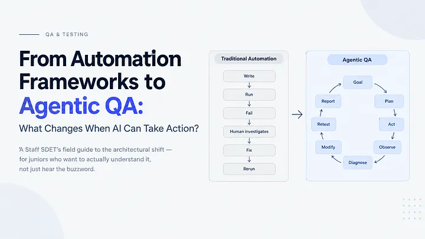
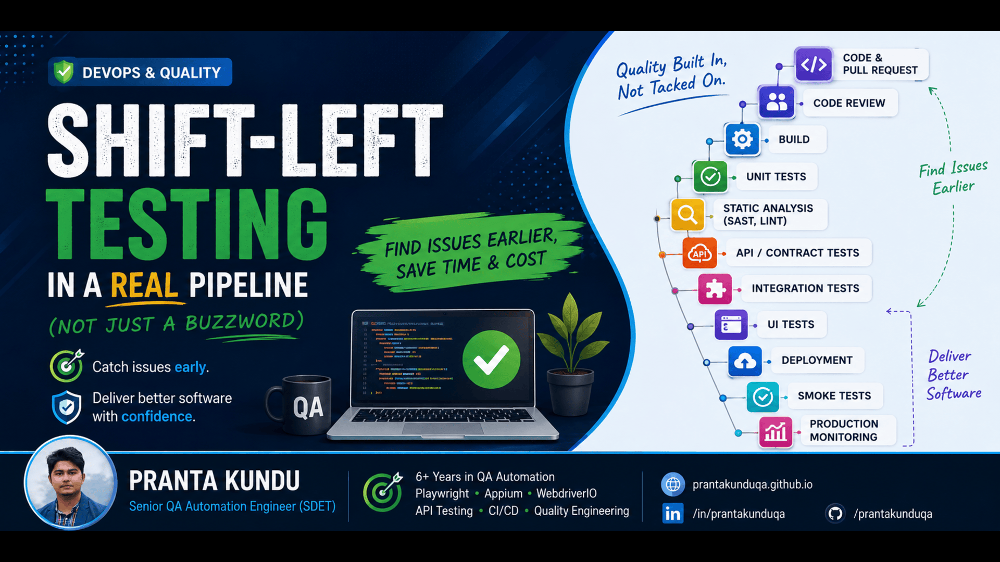

Engineering quality into every stage of software delivery.
I design scalable test automation frameworks, architect containerized CI/CD test gates, investigate elusive regressions, and help high-velocity engineering teams ship reliable software with verifiable evidence instead of hope.
Reliability is not a checkbox at the end of a sprint. It is an engineering discipline that begins at the first product requirement and extends through continuous production telemetry.
01 / SHIFT-LEFT
Quality starts before testing.
Reviewing PRDs, probing acceptance criteria, and uncovering ambiguous edge cases before code is written costs a fraction of fixing regressions in production.
DEFECT PREVENTIONPRD Review
02 / AUTOMATION INTENT
Automation removes repetition, not judgement.
Machines excel at rapid, deterministic regression execution across browsers. Human engineering insight owns the risk model, business logic trade-offs, and critical release accountability.
SDET FOCUSRisk Modeling
03 / REAL CONFIDENCE
Tests should produce confidence, not numbers.
A high coverage percentage means nothing if tests are brittle or assert trivialities. 50 resilient, business-critical tests running in 2 minutes deliver more value than 500 flaky ones.
RESILIENCEZero Flakiness
04 / PROACTIVE HUNTING
Good QA finds risks before users find bugs.
Automated suites guard against regression; exploratory testing investigates anomalies, concurrency collisions, network timeouts, and real-world mobile chaos.
EXPLORATORY QAEdge Invariants
05 / VERIFIABLE EVIDENCE
Release confidence comes from evidence.
Every production deployment gate should be backed by reproducible execution artifacts: Allure test runs, HAR network traces, API payload assertions, and container logs.
AUDIT TRAILArtifact Telemetry
06 / SHARED OWNERSHIP
Quality is a shared team discipline.
Quality is built with developers, not enforced upon them. Facilitating shift-left standards, developer-friendly automation tooling, and blameless postmortems fosters lasting engineering excellence.
CULTUREDeveloper-in-Loop
6+ Years
Engineering Experience
50+ Suites
Frameworks Built
85%+
Automation Coverage
60% Faster
Release Acceleration
02 / Capabilities
Grouped the way the work actually happens
From architecting resilient UI & mobile test runners to validating distributed microservices and continuous deployment gates.
CORE CAPABILITY
Modern Browser Automation with Playwright & TypeScript
Building resilient, high-speed end-to-end regression test suites that run across Chromium, Firefox, and WebKit without arbitrary sleep delays.
›Upskilling manual QA engineers into automated SDETs
›Conducting regular code reviews on test PRs
›Leading internal workshops on Playwright & Docker
Agile Alignment
›Sprint capacity planning & QA story estimation
›Representing QA in engineering leadership syncs
›Defining hiring rubrics and technical interview assessments
Recognition
›Long-Term Service Award recipient at Arogga Ltd.
›Promoted from SQA Engineer to Assistant Manager
›Recognized for engineering dedication and team enablement
INNOVATION
AI-Assisted Testing & Agentic QA Workflows
Integrating AI tooling and Model Context Protocol (MCP) into test authoring, edge-case generation, and log analysis while maintaining human engineering accountability.
AI in QAMCP WorkflowsTest SynthesisFailure Diagnosis
Test Authoring
›Synthesizing boundary scenarios from user stories
›Accelerating boilerplate POM scaffolding
›Mock data generator for complex healthcare orders
Triage & Analysis
›AI-assisted diff analysis of failing CI execution logs
›Clustering duplicate bug reports from customer support
›Suggesting locator resiliency improvements
Engineering Rule
›Always human-in-the-loop: AI proposes, engineer verifies
›Zero blind reliance on unverified generative output
›Focusing human energy on high-risk architectural trade-offs
03 / Journey
6+ years driving quality across high-velocity products
Progressing from hands-on functional testing to architecting automated platforms and leading quality engineering at Bangladesh's largest healthtech company.
Professional Experience
Assistant Manager & Senior SDET
2023 — Present
Arogga Ltd. · Dhaka, Bangladesh
Leading QA engineering for the premier healthtech e-commerce platform. Architected Playwright web automation, Appium mobile regression suites, and automated CI quality gates that cut regression cycle time by 60%.
Designed automated regression frameworks for a high-scale social media platform. Integrated Jenkins pipelines, authored API contract test suites with Newman, and established defect triage standards.
SeleniumPythonJenkinsREST APIs
QA Engineer
2021 — 2022
QA Harbor Ltd.
Conducted functional, regression, exploratory, and performance testing for client web applications. Authored test plans, managed test case repositories, and tracked bug lifecycles in Jira.
Manual QATest Case DesignJiraPostman
Academic Background
M.Sc. in Computer Science & Engineering
2023 — 2024
Jahangirnagar University (JU)
Specialized research in Software Testing, Automated Frameworks, and Artificial Intelligence.
B.Sc. in Computer Science & Engineering
2017 — 2021
American International University Bangladesh (AIUB)
Foundation in Algorithms, Data Structures, OOP, Software Engineering, and Operating Systems.
Certifications & Honors
Click to View
Engineering Endorsements
Md. Aminul Islam
VP of Engineering / Tech Leader
"Pranta is one of the most reliable and thorough SDETs I have worked with. His ability to architect automated test pipelines and lead QA initiatives across fast-moving squads made a profound impact on our release stability."
04 / Case Studies
Selected quality engineering implementations
Deep-dive into real production implementations: automated test architectures, multi-tenant POS platforms, and containerized delivery gates.
CONTEXT
Arogga processes thousands of daily pharmaceutical and healthcare orders across Bangladesh. The platform involves prescription verification workflows, cold-chain logistics, and multi-gateway payments (bKash, Nagad, Cards).
APPROACH & ARCHITECTURE
Engineered unified test suites combining Playwright for web and Appium for mobile. Created idempotent data generators to mimic realistic prescription orders and simulated payment gateway callbacks with Mockoon.
QUALITY IMPACT
Regression cycle dropped by 60%. Production checkout escape bugs dropped to zero. Enabled automated daily releases without manual regression bottlenecks.
Legacy Selenium test scripts suffered from frequent timing breakages, hardcoded thread sleeps, and poor failure triage visibility when UI components re-rendered asynchronously.
APPROACH & ARCHITECTURE
Architected a ground-up Playwright framework utilizing TypeScript strict mode, Page Object Model abstractions, auto-waiting web assertions, and custom locator factories.
QUALITY IMPACT
Achieved 99.8% test stability across 450+ test scenarios. Test suite execution time plummeted from 42 minutes to under 4 minutes with 6 parallel containerized workers.
Nexchar is an enterprise retail POS system handling inventory accounting, invoice printing, tax rate variations, and multi-tenant store isolation across several countries.
APPROACH & ARCHITECTURE
Built end-to-end multi-currency accounting test suites. Validated inventory decrement events across simultaneous simulated checkouts and tested offline caching sync behavior.
QUALITY IMPACT
Uncovered 14 critical calculation boundary edge cases prior to commercial rollout. Zero cross-tenant data leakage incidents detected in production.
PlaywrightPostmanPostgreSQL TestingMulti-Tenancy
CONTEXT
Microservices frequently introduced breaking changes in nested JSON payloads, undocumented query parameters, and session invalidation headers that went undetected until UI testing.
APPROACH & ARCHITECTURE
Developed automated Postman collections executed via Newman CLI inside GitHub Actions on every pull request. Implemented strict JSON Schema validation, JWT token rotation tests, and 4xx/5xx error status checks.
QUALITY IMPACT
Over 120 API endpoints audited continuously with average run times under 45 seconds. Caught 28 breaking schema mutations before frontend team integration.
Manual release sign-offs and local test runs caused deployment anxiety. Developers had no immediate feedback on whether their code commits broke existing user workflows.
APPROACH & ARCHITECTURE
Containerized the entire test harness with lightweight Alpine-based Docker runners. Integrated GitHub Actions status checks that automatically block merge buttons when smoke tests fail, and post Allure summary links directly in PR comments.
QUALITY IMPACT
Engineers receive automated quality feedback within 90 seconds of opening a PR. Release approval shifted from subjective opinions to deterministic evidence.
GitHub ActionsDockerSlack WebhooksAllure Reports
CONTEXT
Ensuring competitive catalogue pricing, detecting out-of-stock anomalies across thousands of SKU items, and monitoring third-party partner portals for breaking interface changes.
Automated 80+ hours of monthly manual price audits. Catalogue discrepancies resolved in under 2 hours instead of 3 business days.
PythonPlaywrightBeautifulSoupAutomation Bots
05 / Pipeline
From user workflow to executable confidence
Inspect how a business workflow transforms step-by-step into resilient test code, containerized CI runs, and verifiable release evidence.
INPUT SPECIFICATION
User Workflow Definition
Workflow Blueprint
Capturing critical business journeys (e.g. Arogga Prescription Upload & Checkout Flow) into verifiable acceptance criteria before writing code.
// 1. Defined User Workflow: Medicine Checkout
// User logs in with phone OTP
// Selects prescribed medicine items & adds to cart
// Enters delivery address in Dhaka Metro
// Chooses payment method (bKash / COD)
// Submits order and receives unique Order ID (#ARG-84920)
06 / Approach
How I approach a regression release under deadline
When a high-priority release is shipping, speed cannot come at the expense of regression risk. Here is the 5-step methodology I use to guarantee release readiness.
STEP 01
Scope & Change Delta Analysis
Examine Git commits, modified API endpoints, and database migrations. Isolate exactly what was altered instead of guessing the blast radius.
Run tag-filtered Playwright and API suites across parallel Docker workers. Gain immediate automated validation on core invariants within 5 minutes.
STEP 04
Exploratory & Real-Device Sanity Pass
Conduct focused exploratory sanity testing on real Android and iOS devices. Check network latency transitions (4G to offline) and payment gateway redirects.
STEP 05
Evidence-Based Release Sign-Off
Compile execution artifacts (Allure report link, passing CI build ID, zero critical blocker bugs) into Jira and Slack for transparent stakeholder approval.
07 / Maturity
From finding bugs to engineering confidence
How an engineering organization progresses from chaotic manual firefighting to automated, continuous quality governance.
Level 04 · Continuous QAOps & Shift-Left Gates
85%+ automated coverage
PR-level test execution, containerized runners, and automated deployment blocks preventing buggy commits from merging. QA is actively engaged in PRD architecture reviews.
Key Signals
›Dockerized headless test runs on pull requests
›Automated Slack alerts with trace logs
›QA involved in early PRD architecture reviews
Tooling Stack
GitHub ActionsDockerBrowserStackAllure Reporting
GOVERNANCE BENCHMARKIndustry Leading Standard
08 / Insights
Technical writing & engineering thoughts
Articles and perspectives authored by Pranta Kundu on test architecture, agentic QA workflows, and eliminating test flakiness.

AI IN QA
Agentic Testing is Changing QA: From Script Follower to Autonomous Verification
How intent-driven AI workflows and MCP are transforming test automation from brittle locator scripts into autonomous verification.
READ ARTICLE›
AUTOMATION CRAFT
Why Flaky Tests Aren't Random: The Mechanics of Flakiness
Dissecting the root causes of non-deterministic CI failures: race conditions, shared database states, and unhandled micro-jitters.
READ ARTICLE›
ARCHITECTURE
Page Object Model is a Pattern, Not a Framework
Why treating POM as an architectural abstraction rather than an entire test framework prevents bloated locators and brittle coupling.
READ ARTICLE›

METHODOLOGY
Shift-Left Testing: How to Prevent Bugs Before Writing Code
The economics of finding ambiguities in PRD requirements rather than discovering bugs during production releases.
READ ARTICLE›
INFRASTRUCTURE
GitHub Actions vs. Jenkins for Modern Test Automation
Evaluating matrix parallelism, runner spin-up latency, Docker integration, and cost trade-offs for SDET teams.
READ ARTICLE›
API VALIDATION
Payment Gateway & API Timeout Testing in High-Volume Systems
Handling network drop-offs, idempotency key assertions, and automated refund validations when payment gateways lag.
READ ARTICLE›
09 / Contact
Building software? Let's make it more reliable.
Whether you are seeking a Senior SDET / QA Leader, looking to architect a Playwright automation framework, or needing a quality audit for your mobile and web platforms.